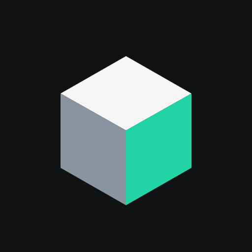

Speedcubing timer
Hızlı ve sessiz bir küp kronometresi. Hesap yok, internet yok, reklam yok ve tek bir Android izni bile istemiyor — her şey telefonunuzda çalışır.
3x3 ve 2x2 için rastgele-durum karıştırma, cihazınızda üretilir. 13 etkinlik desteklenir.
İki pedi basılı tut, bırakınca başlar, ikisine dokununca durur. Dikeyde ve yatayda.
ao5, ao12, ao50, ao100 ve mo3 — WCA kırpma kurallarıyla, güncel ve en iyi değerleriyle.
İnternet izni yok. Yedeği JSON, oturumu CSV olarak dışa aktarabilirsiniz.
Uygulama yayına alındığında bu bağlantı çalışır.